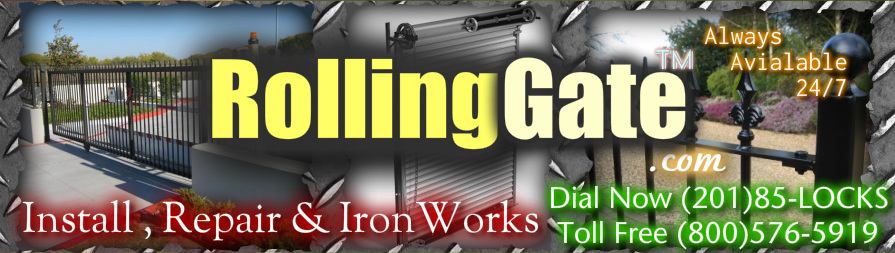

Rolling Gate - Installation, Repair and Maintenance
Rolling Gate - Installation, Repair and Maintenance


NJ Gates provides a full line of services for most Gates types and brands
NJ Gates
is in the business for so many years now and we have been the leading provider of reliable and stylish gates that adds value and security for residential and commercial properties in the entire NJ area.
New Jersey Gates repair , Rolling Gate repair storefront gate fin NJ gates repair install gate , gate operator , gate service , lubrication gates. roll up gate roll down gates new jersey gate 24/7 , 24 hour gate services
We are committed in meeting the customer’s requirements by providing high quality of gates and services that will last for years. That is why NJ Gates became the no. 1 choice of people in NJ when it comes to their gates services needs.
New Jersey Gates repair , Rolling Gate repair storefront gate fin NJ gates repair install gate , gate operator,
We are committed in meeting the customer’s requirements by providing high quality of gates and services that will last for years. That is why NJ Gates became the no. 1 choice of people in NJ when it comes to their gates services needs.
New Jersey Gates repair , Rolling Gate repair storefront gate fin NJ gates repair install gate , gate operator,
gate service , lubrication gates. roll up gate roll down gates new jersey gate 24/7 , 24 hour gate services
Our goal is to establish and maintain good relationship with our customers by giving effort to details for 100% satisfaction guaranteed NJ
NJ Driveway Gates

In this
page you will find one of the largest Wrought Iron Fence and Gate Result selection in the net a great selection of Security Gates,Safety Gates, specializing in Front Gates Driveway Gates, the Gate World at your finger tips.Gates,Driveway Gates,Garden Gates that are listed below just click to learn more about the Gate Design that are available
NJ Sliding Gates

The gate
frame is supported from the tracks by four, self-aligning, 4-wheeled, sealed lubricant, ball-bearing truck assemblies.
The bottoms of the support posts are equipped with two pairs of rubber guide wheels.
New Jersey Gates repair , Rolling Gate repair storefront gate fin NJ gates repair install gate , gate operator,
NJ Rolling Gates - Roll Up Gate
Installing
& repairing We have a time-tested and proven track record. Whether your needs are related to installation or repairs, rely on the experience and professionalism of our NJ 24 HOUR DOOR SERVICE - backed by our support to assist you.
NJ Gates Repair
Accidents
and component failures do happen and we are here to help. We stock numerous replacement parts in our shop and our service trucks to speed up the repair of your door problems. we customize your order and provide you with an equivalent or better door component. We also design and custom make some components when required.
Roll-up (overhead) doors are used daily and take quite a bit of abuse. Wear and tear on rear doors from frequent use also causes a variety of problems. Our OEM trained service technicians can perform the following repairs:
- • Door Replacement - Propar, Whiting, Todco, Diamond, etc
- • Broken Hinges - Top, Bottom, End, Center
- • Door Operator/Spring Balancer Repair or Replacement
- • Rear Frame Repairs - Header, Door, Door Posts & Rear Sill
- • Door Cable Repalcement
- • Door Roller Replacement
NJ Arm Barrier Gates
Complete
line of Solar, Automatic & manually operated Barrier Gates for commercial and governmental applications for residential applications. These barrier gates come in sizes up to and over 32 foot arm lengths.
New Jersey Gates repair , Rolling Gate repair storefront gate fin NJ gates repair install gate , gate operator , gate service , lubrication gates. roll up gate roll down gates new jersey gate 24/7 , 24 hour gate services
NJ Fencing Services

Premier provider
of quality fence products, fence installation and repair. Whether you are in need of commercial or residential fencing, we’re here to help you.
For those who are unsure, our fencing experts are here to help you decide which quality fence will best meet the needs of your home or your business.